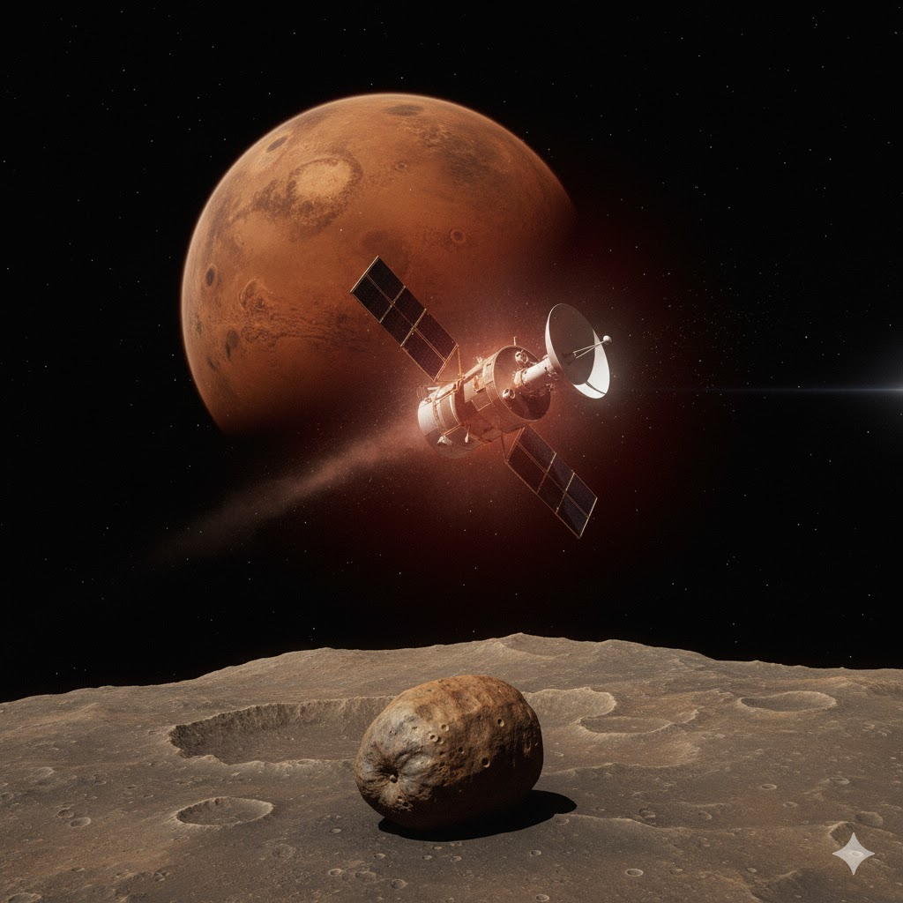
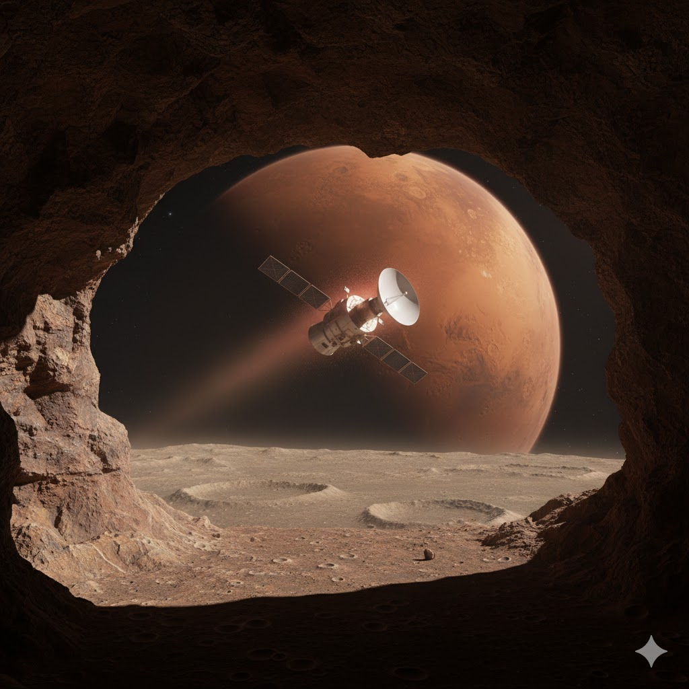

PROGRAMA PHOBOS
Agencia: Unión Soviética
Programa: Exploración de Marte y su luna Phobos
Lanzamiento: 1988
Objetivo: Estudiar Marte y realizar el primer estudio cercano de su luna Phobos, incluyendo la posible liberación de pequeños módulos de aterrizaje.
Phobos I

Lanzamiento: 7 de julio de 1988
Tipo de misión: Orbitador de Marte / explorador de Phobos
Duración de misión: Aproximadamente 2 meses
Última transmisión: 2 de septiembre de 1988
La sonda Phobos I fue la primera de las dos misiones soviéticas enviadas para estudiar Marte y su luna Phobos. Durante su viaje interplanetario se perdió el contacto debido a un error en comandos enviados desde la Tierra que desactivaron el sistema de orientación de la nave. Como resultado, la sonda perdió su capacidad de apuntar sus paneles solares al Sol y quedó sin energía.
Aunque la misión terminó prematuramente, proporcionó valiosa experiencia técnica para la segunda sonda del programa.
Phobos II

Lanzamiento: 12 de julio de 1988
Tipo de misión: Orbitador de Marte / explorador de Phobos
Duración de misión: Julio 1988 – Marzo 1989
Última transmisión: 27 de marzo de 1989
Phobos II logró llegar al sistema de Marte y entrar en órbita marciana, enviando datos científicos y numerosas imágenes del planeta. La misión estaba diseñada para acercarse a la luna Phobos y desplegar pequeños módulos de aterrizaje para estudiar su superficie.
Sin embargo, poco antes de iniciar la fase final de aproximación a la luna marciana, la comunicación con la nave se perdió repentinamente. La última señal recibida ocurrió mientras la sonda se preparaba para maniobras de observación cercanas a Phobos.
A pesar de la pérdida de la nave, Phobos II logró transmitir datos importantes sobre Marte, su atmósfera y el entorno espacial del planeta.
Importancia histórica
El programa Phobos representó uno de los intentos más ambiciosos de la exploración soviética del planeta Marte. Las misiones introdujeron tecnologías avanzadas para la época, incluyendo módulos de aterrizaje, instrumentos de análisis del plasma espacial, espectrómetros y cámaras de alta resolución.
Aunque ninguna de las dos sondas completó plenamente sus objetivos, estas misiones marcaron un paso importante en la exploración de Marte y sentaron las bases para futuras misiones robóticas internacionales.
Registro de misión
ARCHIVO DESCLASIFICADO
PROGRAMA PHOBOS
ÚLTIMA SEÑAL REGISTRADA: 27 MARZO 1989
ESTADO: CONTACTO PERDIDO
⬅ Regresar a Misiones No Tripuladas